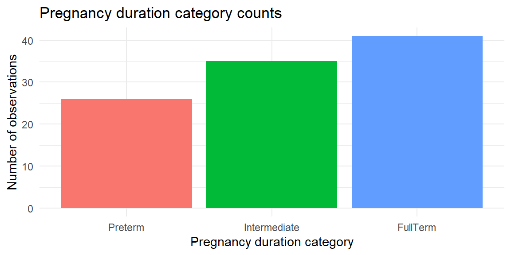
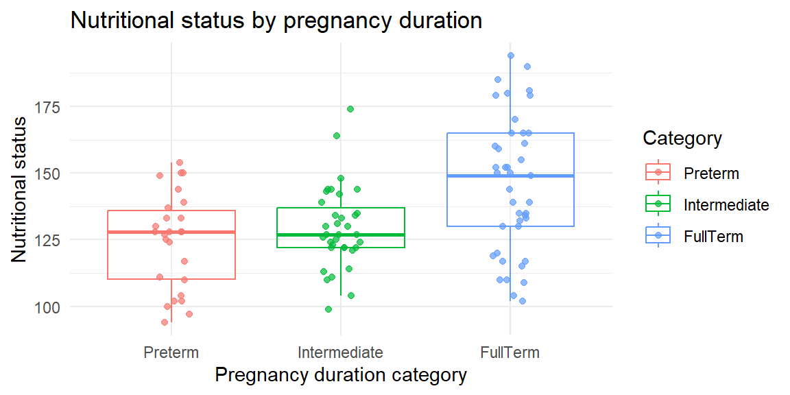
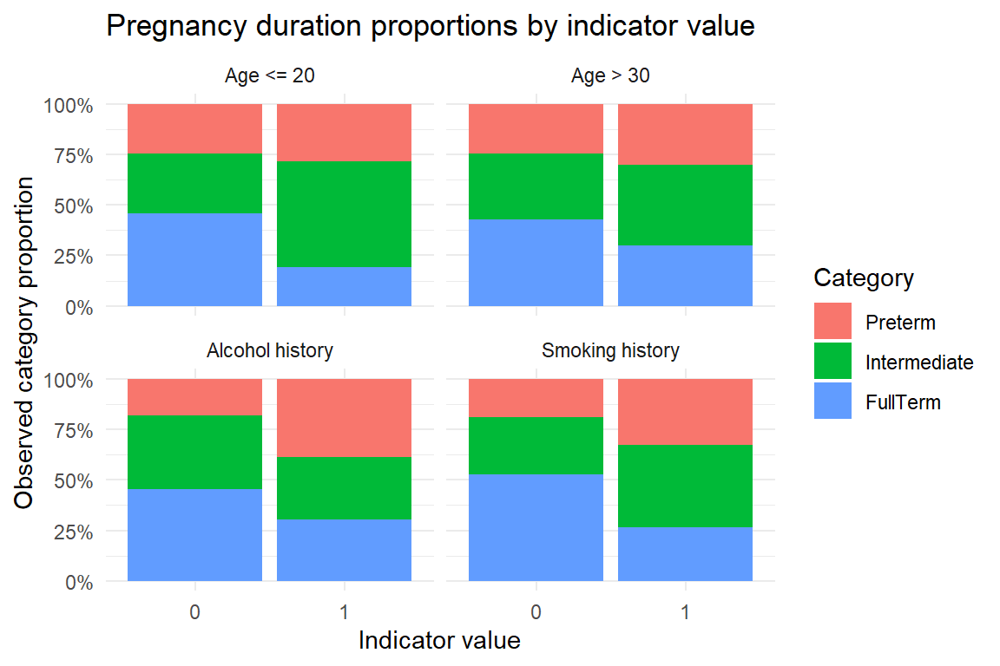
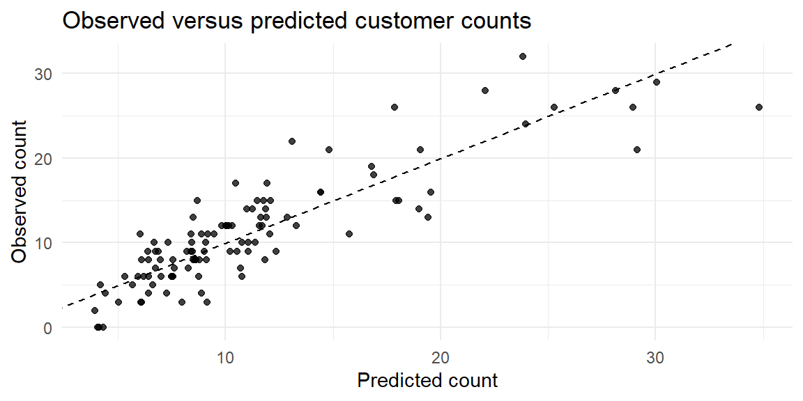

25Multinomial Logistic Regression, Ordinal Regression, and Poisson Regression
“It’s easy to lie with statistics; it is easier to lie without them.” - Frederick Mosteller
The previous chapters focused on binary logistic regression. In this chapter, we briefly introduce three related models for categorical and count responses:
multinomial logistic regression for nominal response categories,
ordinal logistic regression for ordered response categories, and
Poisson regression for count responses.
These models extend the regression idea beyond quantitative responses while still using predictors to explain or predict an outcome.
25.1 Nominal Response
Logistic regression is most frequently used when the response variable has two categories. Sometimes, however, the response variable has more than two categories.
If those categories have no natural ordering, the response is nominal. For example, a consumer’s product choice among product A, product B, and product C is nominal because the categories are names rather than ordered levels.
Multinomial logistic regression models the probability of each response category by comparing each non-baseline category to a chosen baseline category.
NoteNominal versus ordinal responses
Response type
Example
Appropriate model
Nominal
Product A, product B, product C
Multinomial logistic regression
Ordinal
Mild, moderate, severe
Ordinal logistic regression
Count
Number of store visits
Poisson regression
The distinction matters because nominal models ignore ordering, ordinal models use ordering, and Poisson models are for nonnegative integer counts.
25.2 Multinomial Logistic Regression
For a response with \(J\) categories, multinomial logistic regression chooses one category as the baseline. The model then compares each other category to that baseline.
For example, if category 1 is the baseline, then the model fits log-odds equations such as
A few targeted plots are often easier to interpret than a large scatterplot matrix. We begin with the distribution of the response categories.
pregnancy_data|>count(Y)|>ggplot(aes(x =Y, y =n, fill =Y))+geom_col(show.legend =FALSE)+labs( x ="Pregnancy duration category", y ="Number of observations", title ="Pregnancy duration category counts")+theme_minimal()

Next, we examine nutritional status by pregnancy duration category.
pregnancy_data|>ggplot(aes(x =Y, y =X1, color =Y))+geom_boxplot(outlier.shape =NA, alpha =0.15)+geom_jitter(width =0.12, height =0, alpha =0.7)+labs( x ="Pregnancy duration category", y ="Nutritional status", color ="Category", title ="Nutritional status by pregnancy duration")+theme_minimal()

Finally, we look at the observed category proportions for the indicator predictors.
pregnancy_indicator_proportions<-pregnancy_data|>select(Y, X2, X3, X4, X5)|>pivot_longer( cols =X2:X5, names_to ="predictor", values_to ="indicator_value")|>mutate( predictor =recode(predictor, X2 ="Age <= 20", X3 ="Age > 30", X4 ="Alcohol history", X5 ="Smoking history"), indicator_value =factor(indicator_value, levels =c(0, 1)))|>count(predictor, indicator_value, Y)|>group_by(predictor, indicator_value)|>mutate(proportion =n/sum(n))|>ungroup()pregnancy_indicator_proportions|>ggplot(aes(x =indicator_value, y =proportion, fill =Y))+geom_col()+facet_wrap(~predictor)+scale_y_continuous(labels =scales::label_percent())+labs( x ="Indicator value", y ="Observed category proportion", fill ="Category", title ="Pregnancy duration proportions by indicator value")+theme_minimal()

Example 25.3
ExampleFitting a multinomial logistic regression model
We can fit a multinomial logistic regression model using a tidymodels workflow.
pregnancy_recipe<-recipe(Y~X1+X2+X3+X4+X5, data =pregnancy_data)pregnancy_model<-multinom_reg()|>set_engine("nnet")pregnancy_workflow<-workflow()|>add_recipe(pregnancy_recipe)|>add_model(pregnancy_model)pregnancy_fit<-pregnancy_workflow|>fit(data =pregnancy_data)
Because Preterm is the baseline category, the model fits one comparison for Intermediate versus Preterm and another for FullTerm versus Preterm.
For example, the coefficient for X1 in the FullTerm row describes the change in the log-odds of being full term rather than preterm for a one-unit increase in nutritional status, holding the other predictors fixed.
Example 25.4
ExamplePredicted probabilities and classes from a multinomial model
A multinomial model gives one predicted probability for each response category. A common classification rule is to predict the category with the largest fitted probability.
pregnancy_predictions<-pregnancy_data|>select(Y)|>bind_cols(predict(pregnancy_fit, new_data =pregnancy_data, type ="prob"),predict(pregnancy_fit, new_data =pregnancy_data, type ="class"))pregnancy_predictions|>slice_head(n =10)|>knitr::kable(digits =3)
Y
.pred_Preterm
.pred_Intermediate
.pred_FullTerm
.pred_class
Preterm
0.094
0.285
0.621
FullTerm
Preterm
0.254
0.561
0.185
Intermediate
Preterm
0.220
0.437
0.343
Intermediate
Preterm
0.335
0.638
0.027
Intermediate
Preterm
0.475
0.392
0.133
Preterm
Preterm
0.497
0.388
0.115
Preterm
Preterm
0.010
0.039
0.951
FullTerm
Preterm
0.335
0.567
0.097
Intermediate
Preterm
0.659
0.314
0.028
Preterm
Preterm
0.187
0.409
0.404
Intermediate
We can compare predicted classes to observed classes with a confusion matrix.
pregnancy_confusion<-conf_mat(pregnancy_predictions, truth =Y, estimate =.pred_class)pregnancy_confusion
bind_rows(accuracy(pregnancy_predictions, truth =Y, estimate =.pred_class),mn_log_loss(pregnancy_predictions, truth =Y,.pred_Preterm,.pred_Intermediate,.pred_FullTerm))|>knitr::kable(digits =3)
.metric
.estimator
.estimate
accuracy
multiclass
0.657
mn_log_loss
multiclass
0.827
Accuracy uses only the predicted class. Multinomial log loss uses the full set of predicted probabilities, so it rewards confident correct predictions and penalizes confident wrong predictions.
25.3 Ordinal Regression
25.3.1 Ordinal Response
When the response categories can be put into a meaningful order, the response is ordinal. Pregnancy duration can be treated as ordinal because
Multinomial logistic regression can still be used, but it ignores the ordering. Ordinal logistic regression uses the ordering directly. A common ordinal logistic model is the proportional odds model, which models cumulative probabilities such as
\[
P(Y_i \le j)
\]
rather than modeling only the separate category probabilities \(P(Y_i=j)\).
NoteWhy use an ordinal model?
An ordinal model can be more parsimonious because it uses the category ordering. Instead of fitting a completely separate coefficient vector for each non-baseline category, the proportional odds model uses one coefficient for each predictor and separate cutpoints between adjacent response categories.
25.3.2 Proportional Odds Assumption
The proportional odds model relies on an important assumption: each predictor has the same effect across the cumulative splits of the ordered response.
For the pregnancy duration categories, the cumulative splits are:
Split
Comparison
1
Preterm versus Intermediate or FullTerm
2
Preterm or Intermediate versus FullTerm
The proportional odds assumption says that a predictor’s slope is the same for these cumulative comparisons, up to the sign convention used by the software. The cutpoints may differ, but the predictor effects are shared.
NoteParallel slopes idea
Another way to say this is that the model assumes parallel slopes on the cumulative logit scale.
For example, if nutritional status is associated with longer pregnancy duration, the proportional odds model assumes that this association works similarly when separating Preterm from higher categories and when separating FullTerm from lower categories.
WarningWhen the assumption may be questionable
The proportional odds assumption may be questionable if a predictor has a very different relationship with different category cutpoints.
For example, if smoking history strongly separates Preterm from the other categories but has little relationship to whether a pregnancy is FullTerm, then one shared slope may be too restrictive. In that case, a multinomial model or a more flexible ordinal model may be more appropriate.
Example 25.5
ExampleFitting a proportional odds model
We can fit a proportional odds model using MASS::polr(). The response must be stored as an ordered factor.
ordinal_data<-pregnancy_data|>mutate( Y =ordered(Y, levels =c("Preterm", "Intermediate", "FullTerm")))ordinal_fit<-MASS::polr(Y~X1+X2+X3+X4+X5, data =ordinal_data, Hess =TRUE)broom::tidy(ordinal_fit, exponentiate =TRUE, conf.int =TRUE)|>filter(coef.type=="coefficient")|>select(term, estimate, conf.low, conf.high, statistic)|>knitr::kable(digits =4)
term
estimate
conf.low
conf.high
statistic
X1
1.0501
1.0274
1.0764
4.1332
X2
0.1386
0.0430
0.4164
-3.4296
X3
0.2558
0.0850
0.7348
-2.4950
X4
0.1883
0.0718
0.4669
-3.5128
X5
0.2036
0.0813
0.4815
-3.5239
The exponentiated coefficients are cumulative odds ratios under the proportional odds model. Their interpretation depends on the direction of the cumulative logits used by the software, so always check the model convention before writing a final applied interpretation.
The model also estimates cutpoints between adjacent ordered categories.
accuracy(ordinal_predictions, truth =Y, estimate =.pred_class)|>knitr::kable(digits =3)
.metric
.estimator
.estimate
accuracy
multiclass
0.657
The ordinal model and multinomial model have the same in-sample accuracy here, but they use different assumptions. The ordinal model uses the response ordering; the multinomial model treats the categories as unordered.
25.4 Poisson Regression
Poisson regression is used when the response variable is a count:
\[
Y_i = 0,1,2,\ldots
\]
Examples include the number of store visits, number of hospitalizations, number of defects, or number of events in a fixed time period.
The mean and variance are the same. This is an important assumption to remember when using Poisson regression.
NoteCounts are not just another continuous response
A count response is nonnegative and discrete. A linear model can predict negative fitted values, but a Poisson model with a log link keeps the fitted mean positive.
This guarantees that the fitted mean count is positive.
Example 25.7
ExamplePoisson regression for store customer counts
The Miller Lumber Company is a large retailer of lumber, paint, plumbing, electrical supplies, and other household supplies.
During a representative two-week period, in-store surveys were conducted and addresses of customers were obtained. The addresses were used to identify the metropolitan-area census tracts in which the customers lived. At the end of the survey period, the total number of customers who visited the store from each census tract was recorded.
The response is:
\(Y\): number of customers who visited the store from the census tract.
ExampleFitting and interpreting a Poisson regression model
lumber_recipe<-recipe(Y~., data =lumber_data)lumber_model<-poisson_reg()|>set_engine("glm")lumber_workflow<-workflow()|>add_recipe(lumber_recipe)|>add_model(lumber_model)lumber_fit<-lumber_workflow|>fit(data =lumber_data)lumber_fit|>tidy()|>knitr::kable(digits =4)
term
estimate
std.error
statistic
p.value
(Intercept)
2.9424
0.2072
14.1977
0.0000
X1
0.0006
0.0001
4.2623
0.0000
X2
0.0000
0.0000
-5.5340
0.0000
X3
-0.0037
0.0018
-2.0913
0.0365
X4
0.1684
0.0258
6.5343
0.0000
X5
-0.1288
0.0162
-7.9481
0.0000
The coefficients are on the log-mean scale. Exponentiating them gives multiplicative effects on the expected count.
For example, if an exponentiated coefficient is 1.18, then a one-unit increase in that predictor is associated with multiplying the expected count by 1.18, holding the other predictors fixed.
Example 25.9
ExamplePredicted counts from a Poisson regression model
lumber_predictions<-lumber_data|>select(Y)|>bind_cols(predict(lumber_fit, new_data =lumber_data, type ="numeric"))lumber_predictions|>slice_head(n =10)|>knitr::kable(digits =3)
lumber_predictions|>ggplot(aes(x =.pred, y =Y))+geom_point(alpha =0.75)+geom_abline(slope =1, intercept =0, linetype ="dashed")+labs( x ="Predicted count", y ="Observed count", title ="Observed versus predicted customer counts")+theme_minimal()

If the model predicted every count perfectly, all points would fall on the dashed line. In practice, count data are noisy, so we look for whether the predictions are reasonably aligned with the observed counts.
25.5 Recap
In this chapter, we introduced three regression models for non-continuous response variables.
Idea
Meaning
Nominal response
A categorical response whose categories have no natural order.
Multinomial logistic regression
A model for nominal responses with more than two categories.
Baseline category
The category used as the comparison group in a multinomial logistic model.
Category-specific coefficients
Separate coefficients for each non-baseline category comparison.
Multinomial predicted probabilities
One fitted probability for each response category.
Multinomial log loss
A metric that evaluates the full set of predicted category probabilities.
Ordinal response
A categorical response whose categories have a meaningful order.
Proportional odds model
An ordinal logistic model based on cumulative probabilities.
Proportional odds assumption
The assumption that predictor effects are shared across cumulative category splits.
Parallel slopes
A way to describe the proportional odds assumption on the cumulative logit scale.
Cutpoints
Thresholds that separate adjacent ordered response categories.
Targeted exploratory plot
A focused plot designed to show one important predictor-response relationship clearly.
Count response
A nonnegative integer response variable.
Poisson distribution
A count distribution where the mean and variance are both \(\mu\).
Poisson regression
A regression model for count responses.
Log link
A link function that models \(\log(\mu_i)\) as a linear predictor.
Mean-count ratio
The exponentiated Poisson coefficient, interpreted as a multiplicative effect on the expected count.
Observed versus predicted plot
A plot used to compare observed counts to fitted counts.
25.6 Check your understanding
NoteProblems
What is the difference between a nominal response and an ordinal response?
Why is multinomial logistic regression appropriate for a response with more than two unordered categories?
What is the baseline category in a multinomial logistic regression model?
If a response has three categories, how many non-baseline log-odds equations are fit?
In the pregnancy duration example, what does it mean that Preterm is the baseline category?
Why does a multinomial model return several predicted probabilities for each observation?
How is the predicted class usually chosen from multinomial predicted probabilities?
Why can accuracy miss information that multinomial log loss uses?
Why might an ordinal model be preferred over a multinomial model for ordered categories?
What are cumulative probabilities in the proportional odds model?
What are cutpoints in an ordinal logistic regression model?
What does the proportional odds assumption say?
What are the two cumulative splits in the pregnancy duration example?
What does the phrase parallel slopes mean in the proportional odds model?
Why should we be careful when interpreting exponentiated coefficients from polr()?
Why can targeted plots be better than one large scatterplot matrix?
What kinds of response variables are appropriate for Poisson regression?
Why does Poisson regression often use a log link?
What does it mean that the Poisson mean and variance are both \(\mu\)?
How do we interpret an exponentiated coefficient in Poisson regression?
Why is a plot of observed versus predicted counts useful?
Why should the multinomial, ordinal, and Poisson models not be treated as interchangeable?
TipSolutions
Nominal categories have no natural order; ordinal categories do. Product choice is nominal, while severity levels such as mild, moderate, and severe are ordinal.
It models multiple category probabilities. Multinomial logistic regression compares each non-baseline category to a baseline category.
It is the reference category. The model expresses log-odds for each other category relative to the baseline.
Two equations are fit. With three categories and one baseline category, there are two non-baseline comparisons.
The other categories are compared to preterm. The Intermediate and FullTerm coefficient rows describe log-odds relative to Preterm.
There is one probability for each possible category. The probabilities should sum to 1 for each observation.
Choose the category with the largest predicted probability. This is the maximum-probability classification rule.
Accuracy uses only the final class label. Log loss also uses how confident the predicted probabilities were.
It uses the ordering. An ordinal model can be more parsimonious and more appropriate when the response categories have a meaningful order.
They are probabilities of being at or below a category. For example, \(P(Y \le \text{Intermediate})\) is cumulative.
They separate adjacent ordered categories. Cutpoints locate the boundaries between response levels on the model scale.
It says predictor effects are shared across cumulative splits. The model uses the same slope for each predictor when comparing lower versus higher ordered response categories.
The splits are Preterm versus higher categories and lower categories versus FullTerm. More specifically: Preterm versus Intermediate or FullTerm, and Preterm or Intermediate versus FullTerm.
The predictor slopes are the same across cutpoints. The cutpoints can shift, but the model does not estimate separate predictor effects for each cumulative split.
Software conventions differ. The sign and direction of the cumulative logit determine how an exponentiated coefficient should be described.
They focus attention. A large matrix can be useful for scanning, but smaller targeted plots make important relationships easier to see and explain.
Nonnegative integer counts. Examples include number of visits, number of defects, or number of events.
It keeps fitted means positive. Modeling \(\log(\mu_i)\) linearly implies \(\mu_i=\exp(\mathbf{x}_i^\prime\boldsymbol{\beta})>0\).
The variance increases with the mean. Larger expected counts also imply larger variability under the Poisson model.
It is a multiplicative effect on the expected count. Values above 1 increase the expected count; values below 1 decrease it.
It shows how well the fitted counts align with the observed counts. Large departures from the diagonal can reveal poor fit or unusual observations.
They are designed for different response structures. Nominal categories, ordered categories, and counts require different model assumptions and interpretations.